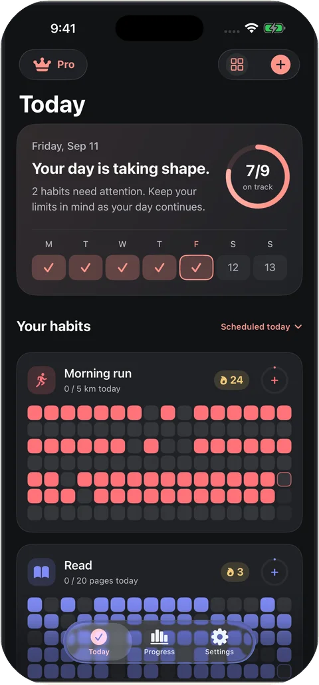
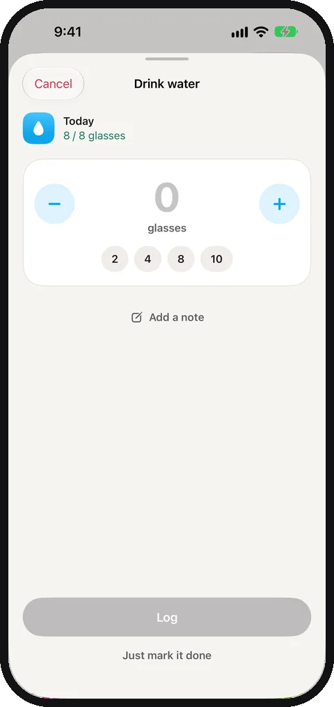
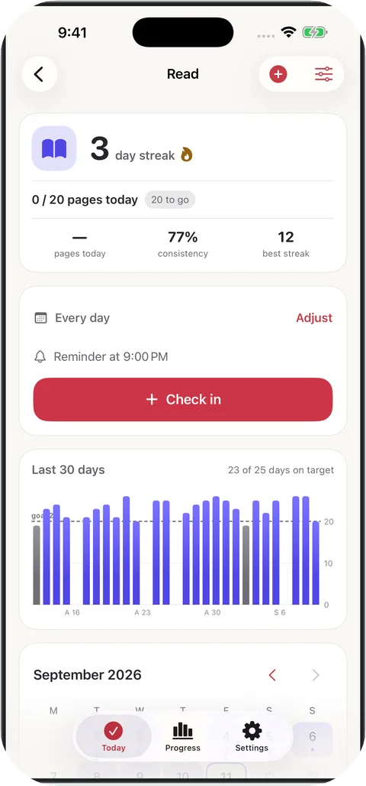
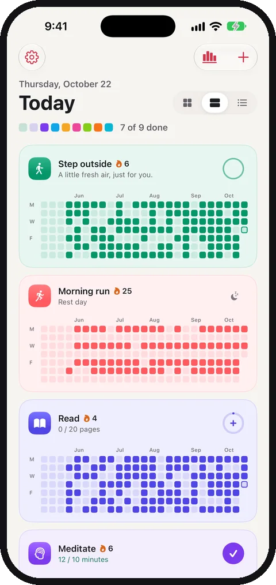

Habit Forever · the habit tracker for iPhone and iPad
Small habits, every day, in color.
Habit Forever turns each day you show up into a colored square. Check in with one tap, count glasses or pages, set reminders, and watch your streaks grow into a picture of your year.
Free for up to three habits. No account, no ads.

See it in 25 seconds
Real screens from the app, nothing mocked up: a morning with three habits, from the first check-in to a 21-day streak.
- 0:00Check in on Read with one tap
- 0:05Log water a glass at a time until you hit 8
- 0:09A reminder for the habit still left today
- 0:13All done, and a 21-day streak worth celebrating
- 0:18The habit’s page: streaks, consistency and your strongest day
How it works
Three steps, then it fits into your day. The whole thing takes seconds.
Pick a small habit
Type a name or start from an idea. Choose every day or the days that suit you, and add a reminder if you like.
Check in
Tap once when it’s done. For number habits, log the amount: glasses of water, pages, minutes, kilometers or your own unit.
Watch it fill with color
Every day you show up becomes a square. Streaks, your best run and your consistency are worked out for you.
Everything a habit needs, nothing it doesn’t
More than a checkmark
Some habits are a yes or no. Others are a number. Habit Forever handles both.
- Reach a number (8 glasses, 20 pages), or stay under a limit for things you want less of
- Goals for each day or each week, on every day, weekdays or the days you choose
- Add a note to any check-in, and fill in a missed day from the last seven days

See what’s working
Your current streak, your best streak and how consistent you’ve been. Each habit gets its own grid of days, like a contribution graph for your life.
- Progress across all your habits at a glance, and celebrations when a streak hits a milestone
- Pro adds deeper patterns: your best days, time of day and month by month

Your day, your way
See every habit on one screen in the layout you like, then keep them close with widgets and Siri.
- Three layouts: Grid, Board (months of days per habit) and Week
- Home Screen and Lock Screen widgets that let you check in without opening the app
- Siri and Shortcuts: check in (with an amount and a note), hear your streak, open a habit
- Reminders that stay quiet on days you’ve already checked in

Your habits stay on your iPhone
There’s no account to create and nothing to sign in to. Your habits, check-ins and notes are stored on your device. With Pro you can export a backup file whenever you want, and import it on another device. Purchases are handled by Apple and RevenueCat. Read the privacy policy.
Free to start. Pro when you want more.
Prices are shown in the app before you buy, in your currency.
Free
- Up to three habits
- Check-off and number habits, goals and limits
- Reminders, notes, streaks and day grids
- A widget for your first habit
Habit Forever Pro
- Unlimited habits
- Deeper insights and patterns
- Widgets for every habit
- Backup export and import
Yearly, monthly, or pay once with Lifetime and keep it for good.
What people say
“Beautiful, simple and you can track any thing not just habits. Really the best on the App Store, life changing app”
“You can now set times and counts separately. The interface is clean and beautiful, and it’s very easy to use…”
Guides and free tools
Practical answers about building habits on iPhone, written by the person who makes the app.
- ToolHow long until it’s a habit? Calculator
Pick a start date and see where the research says a habit usually sticks.
- ToolPrintable habit tracker
Make a month grid for your habits and print it or save it as a PDF.
- GuideHow to track habits on iPhone
Built-in options first, then when a habit app helps.
- GuideHow long does it take to form a habit?
What the 66-day research actually found, and the 21-day myth.
- GuideHabit tracker widgets on iPhone
Add habits to your Home Screen and Lock Screen.
- CompareBest habit tracker apps for iPhone
An honest comparison, including when another app fits better.
Questions
Is Habit Forever free?
Yes. Habit Forever is free to download and free for up to three habits, with check-ins, number goals, reminders, notes, streaks and day grids. Habit Forever Pro is optional and adds unlimited habits, deeper insights, widgets for every habit and backup export and import, as a yearly or monthly subscription or a one-time lifetime purchase.
Do I need an account?
No. There is no account or sign-in. Your habits, check-ins and notes are stored on your device.
Does Habit Forever sync with iCloud?
No. Habit data stays on the device. With Pro you can export a backup file and import it on another iPhone or iPad.
Can I track numbers, not just yes or no?
Yes. A habit can be a simple check-off or a number such as glasses, pages, minutes, distance, spending or a unit you name, with a number to reach or a limit to stay under, per day or per week.
Which devices does it run on?
Habit Forever runs on iPhone and iPad with iOS 17 or later. There is no Apple Watch, Mac or Android version.
Is Habit Forever the app formerly called Habit Tracker?
Yes. The app was previously listed on the App Store as “Habit Streak Tracker: Routines” and showed “Habit Tracker” on the Home Screen. From version 4.0 it is called Habit Forever. It is the same app, and your habits and history carry over.
About Habit Forever
Habit Forever is a habit tracker for iPhone and iPad (iOS 17 or later) by independent developer Mohamed Elatabany. Track check-off or number habits with goals, reminders, notes, streaks and colorful day-by-day grids, plus Home Screen and Lock Screen widgets and Siri Shortcuts. There is no account, and habit data stays on your device. It is free for up to three habits; Habit Forever Pro (yearly, monthly or a one-time lifetime purchase) adds unlimited habits, deeper insights, widgets for every habit and backup export/import. It is rated 4.6★ on the App Store, from 17 ratings worldwide, where it is listed as “Habit Forever: Streak Tracker” (formerly “Habit Streak Tracker: Routines”).